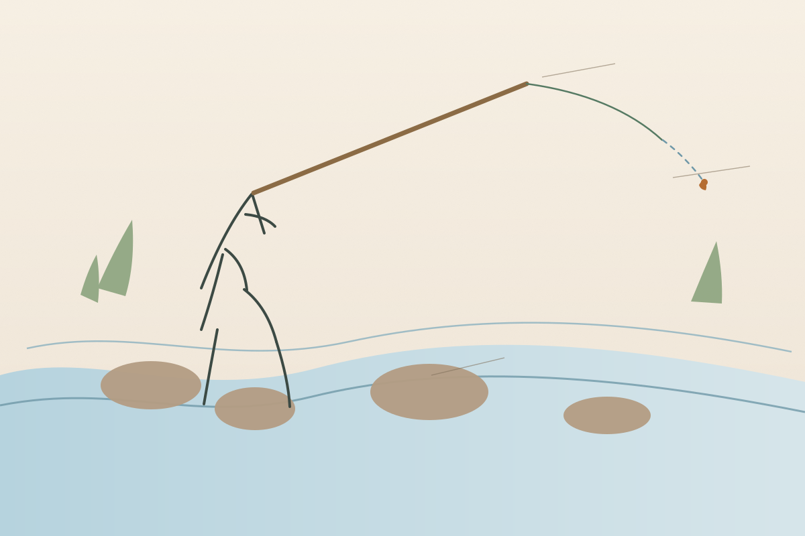
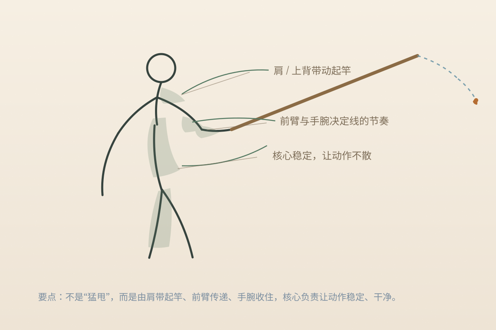

天展钓最核心的特点，是 长竿、固定线、无轮。它本来就是为山溪、溪流与小型水域里的精准呈现发展出来的，所以跟“甩得远、搜得广”的玩法完全不是一个思路。它更像是在水面上做很轻的书法。

你可以把它理解成：不是“覆盖范围最大”的玩法，而是“近距离精确递送”最舒服的玩法。
入门最重要的是先把线组长度和控线感觉弄明白，不是一下子囤很多钩型。

如果你本来就喜欢小物钓，天展其实很顺：它们都不是“鱼越大越好”，而是很看重观察、呈现和手上那点细微感觉。